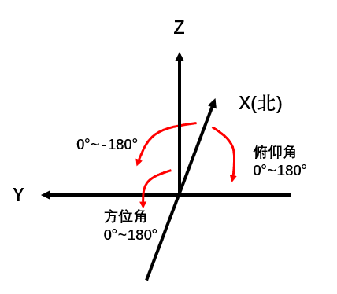

欢迎使用测向可视化演示工具，该网站是doa测向方法的效果演示，接下会教您如何使用该网站
黑色信号点表示信号源，发射300MHz的远场窄带信号,后面将通过各种阵列天线探测信号方位
探测器方位设置如下，正北方向为x轴正方向,正西方向为y轴正方向，向上为z轴正方向。
方向探测可探测方位角(-180~180)和俯仰角(0~180).方位角由x正轴出发顺时针为正值，俯仰角由z正轴出发
操作方法：
1.用鼠标在地图上选定探测器位置（不含高度）
2.在弹出的对话框中设定探测器高度（信号塔高度134m,探测器不超过200m）
3.在接下来的对话框中选择使用的阵列结构（1：L型阵列，2：均匀面阵，3：均匀圆阵）
4.根据选择的阵列结构设定阵列参数（阵元个数，阵元个数设定越多,运算耗时越长）
5.等待计算完成，会显示真实的信号方位，并用线段指向出真实方向和计算方向.蓝色代表真实方向，红色代表预测方向
6.删除按钮可用于删除上一个标记点
下面是方位示意图：
